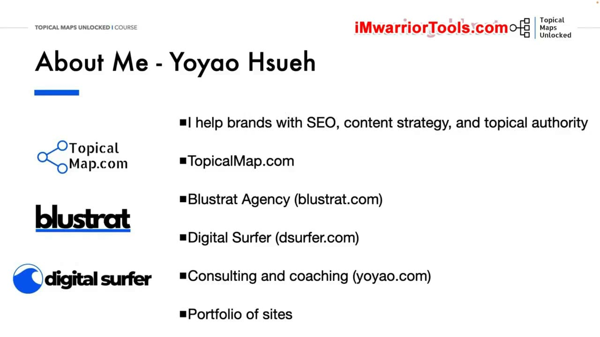
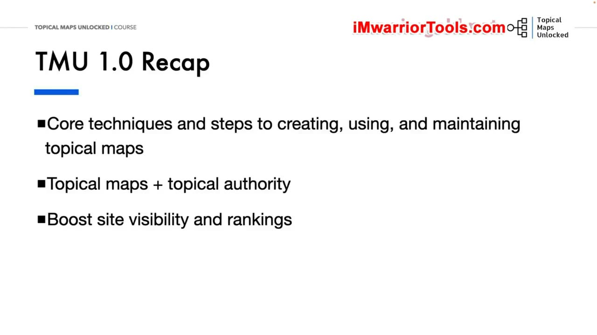
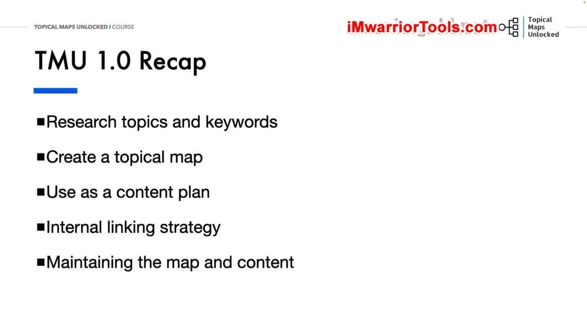
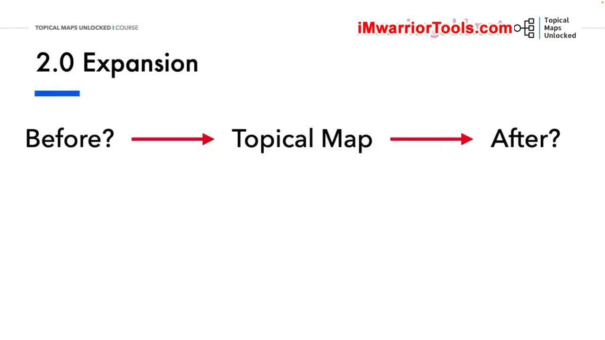
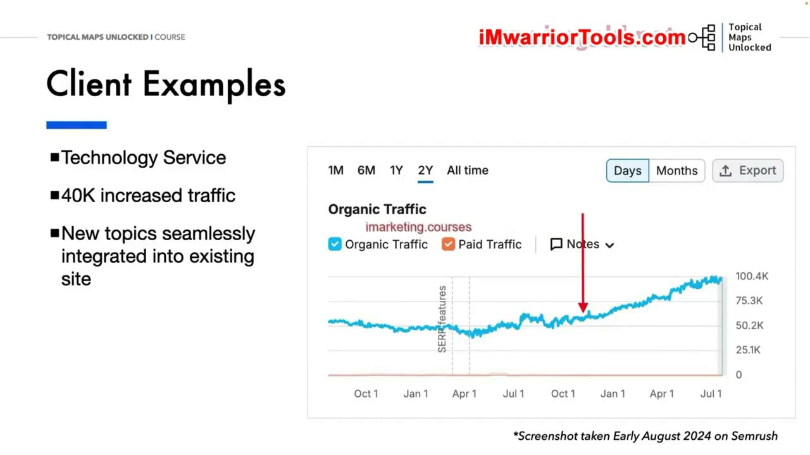
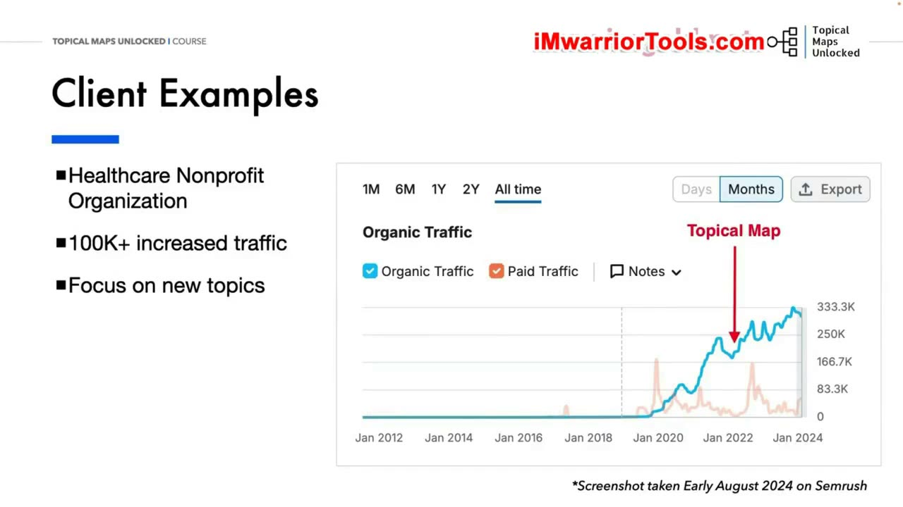
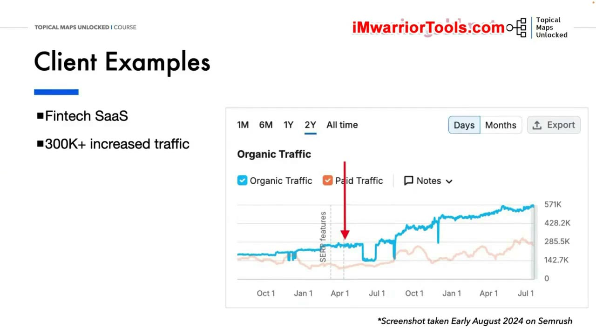
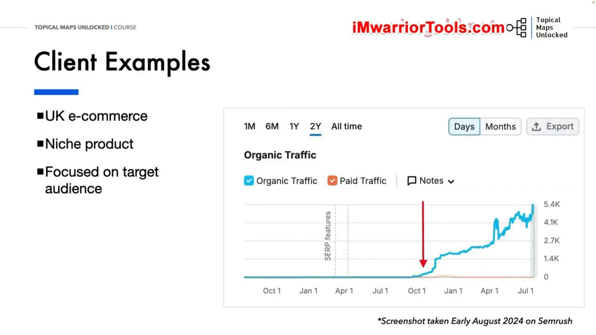
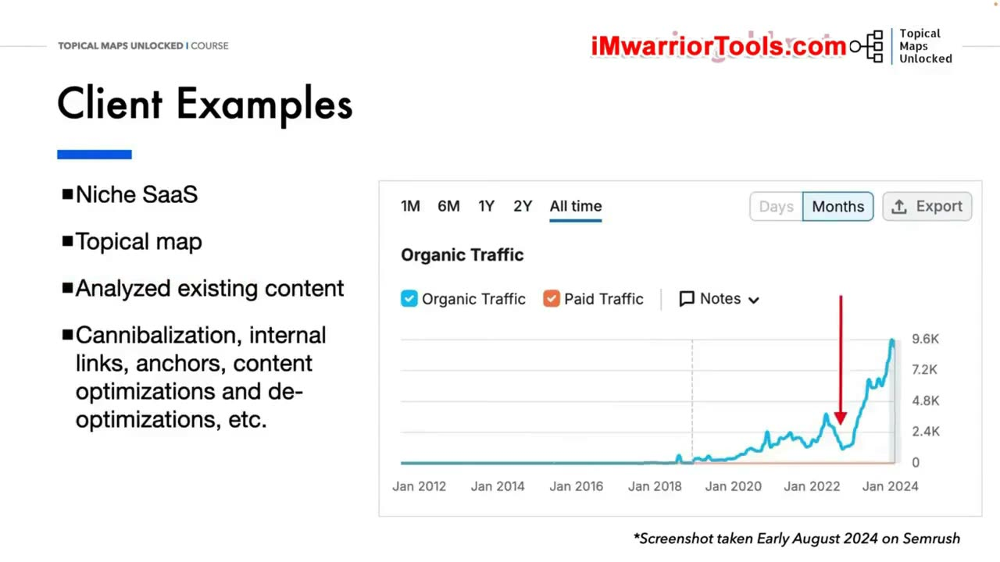
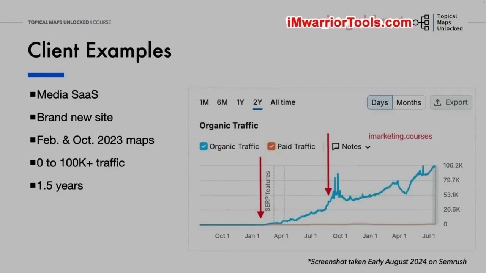

Welcome to Topical Maps Unlocked 2.0
1. Chào mừng và người hướng dẫn khóa học
Chào mừng bạn đến với Topical Maps Unlocked 2.0. Yoyao Hsueh bày tỏ sự vui mừng khi có các học viên ở đây và mong muốn bắt đầu hành trình nâng cao kỹ năng SEO. Trước khi đi vào nội dung khóa học, ông dành một phần để giới thiệu bản thân với những người chưa biết mình. Ông giới thiệu cách phát âm tên và đùa rằng bức ảnh minh họa có thể đã được chụp từ vài năm trước, nhưng đó vẫn chính là ông.
Công việc của Yoyao là giúp các thương hiệu về SEO, Content strategy và xây dựng Topical authority, tức thẩm quyền theo chủ đề. TopicalMap.com là nơi cung cấp dịch vụ Topical map cũng như khóa học Topical Maps Unlocked. Từ hoạt động này, ông mở rộng sang Blustrat Agency để có thể hỗ trợ thương hiệu nhiều hơn việc chỉ tạo một bản đồ chủ đề.
Phạm vi hỗ trợ của agency bao gồm chiến lược nội dung, tạo nội dung và những công việc SEO khác giúp thương hiệu phát triển Topical authority. Như vậy, việc xây dựng Topical map nằm trong một hoạt động rộng hơn về thương hiệu và nội dung, thay vì là dịch vụ duy nhất được thực hiện.

2. Digital Surfer, tư vấn và danh mục website
Một hoạt động khác là Digital Surfer, tại dsurfer.com. Đây là newsletter miễn phí hằng tuần tập hợp những tin tức và tài nguyên quan trọng về SEO, AI, kinh doanh trực tuyến và Digital marketing. Yoyao lưu ý rằng đây không phải kiểu newsletter chỉ mất năm phút để đọc. Thông thường, người đọc sẽ dành khoảng 15 đến 20 phút cho một số newsletter.
Lý do là ông không đơn thuần đưa ra danh sách tin. Ông tuyển chọn, biên tập, tóm lược và bổ sung góc nhìn của mình đối với những tin tức, tài nguyên đáng chú ý. Việc học hỏi liên tục là một phần trong cách ông làm việc. Ông cũng liên hệ điều đó với người đang theo học: lý do bạn ở đây và lắng nghe bài giảng là vì bạn muốn học.
Ngoài ra, ông thực hiện Consulting và coaching, được giới thiệu cùng địa chỉ yoyao.com. Ông có danh mục riêng gồm các website Affiliate và website nội dung. Chính hoạt động với những website đó là cách ông bắt đầu tham gia SEO và Content strategy. Ông còn thường xuyên thử nghiệm trên một số website thử nghiệm của mình trước khi chuyển sang giới thiệu nội dung khóa học.
3. Nền tảng được giữ lại từ phiên bản 1.0
Trước khi giải thích những điểm mở rộng của 2.0, Yoyao nhắc lại phạm vi của phiên bản 1.0. Phiên bản đó đã trình bày các kỹ thuật cốt lõi và các bước để tạo, sử dụng cũng như duy trì Topical map. Những bài học này không bị loại bỏ trong 2.0: tất cả vẫn có trong khóa học mới và được cập nhật khi cần thiết.
Nền tảng đầu tiên là hiểu Topical map là gì và Topical authority là gì. Từ đó, người học biết cách sử dụng chúng để tăng khả năng hiển thị và thứ hạng của website trên công cụ tìm kiếm. Khóa học không chỉ giới thiệu một tài liệu mang tên bản đồ chủ đề, mà còn giải thích cách sử dụng tài liệu đó trong hoạt động SEO.
Đối với người đã học 1.0, phần nội dung cốt lõi ấy vẫn là nền móng của 2.0. Với người đang bắt đầu, đó là những kiến thức mà khóa học tiếp tục cung cấp trước khi mở rộng sang các công việc ở trước và sau giai đoạn xây dựng Topical map.

4. Từ nghiên cứu chủ đề đến duy trì bản đồ và nội dung
Trong các bước thực hành, người học nghiên cứu chủ đề và Keyword, sau đó xây dựng Topical map. Bản đồ này tiếp tục được sử dụng như một Content plan, tức kế hoạch nội dung. Mục tiêu là tránh tình trạng viết những bài cạnh tranh với nhau để giành cùng một vị trí trên SERP, dẫn đến Keyword cannibalization.
Một nội dung quan trọng khác là Internal linking: cần liên kết giữa những bài viết nào, và dùng Anchor text nào cho các liên kết đó. Khi đã có Topical map và kế hoạch nội dung, công việc không kết thúc ở việc xây dựng bản đồ ban đầu. Người làm còn phải duy trì cả bản đồ lẫn hệ thống nội dung theo thời gian.
Việc duy trì cũng bao gồm nhận biết những bài nào có thể cần Content optimization và những bài nào cần De-optimization. Yoyao giải thích rằng Google có thể đang phân loại một bài khác với ý định ban đầu của người tạo nội dung. Vì thế, không phải mọi trường hợp đều chỉ là tối ưu thêm theo hướng cũ; có những nội dung cần được điều chỉnh cách tối ưu cho phù hợp với cách chúng đang được phân loại.

5. Vì sao 2.0 mở rộng cả trước và sau Topical map
Chỉ tạo một Topical map là chưa đủ. Trước khi có thể xây dựng một bản đồ hiệu quả, vẫn còn rất nhiều công việc cần hoàn thành. Sau khi bản đồ đã được tạo, cũng có nhiều việc phải tiếp tục thực hiện. Đây là lý do phiên bản 2.0 mở rộng ra cả phần trước lẫn phần sau của Topical map.
Yoyao mô tả Topical map như một tài liệu sống cần được cập nhật liên tục. Điều này đặc biệt rõ trong các lĩnh vực phát triển nhanh như AI và công nghệ: bản đồ không phải thứ được tạo một lần rồi giữ nguyên mãi. Nội dung khóa học vì thế xem xét cả những gì cần làm để chuẩn bị cho bản đồ và những gì cần làm khi đưa bản đồ vào sử dụng.
Ở phía trước là Brand foundation, Brand identity, Market research, Audience insights và Content strategy. Người làm xây dựng nền tảng, nhận diện thương hiệu, nghiên cứu thị trường, hiểu đối tượng mục tiêu và định hình chiến lược nội dung. Sau đó, tất cả thông tin thương hiệu đã thu thập được trở thành đầu vào cho việc tạo Topical map.
Ở phía sau là Content plan, Content creation, Content optimization, xuất bản và Content distribution, rồi Performance analysis. Sau khi bản đồ hoàn thành, bạn lập kế hoạch, triển khai tạo nội dung, tối ưu, xuất bản và phân phối nội dung. Cuối cùng, bạn phân tích hiệu suất để biết điều gì đang hoạt động và điều gì không.

6. Vai trò kết nối của bản đồ và cách xem các ví dụ khách hàng
Chuỗi công việc trên tạo thành một chiến lược bao phủ các giai đoạn phát triển thương hiệu và tạo nội dung, từ những yếu tố nền tảng cho đến phân tích hiệu suất. Topical map là phần kết nối trung tâm: nó cung cấp định hướng và tác động tới từng giai đoạn của quy trình. Cách tiếp cận tích hợp giúp các khía cạnh của Content strategy được sắp xếp, cấu trúc có mục đích, qua đó tăng tiềm năng xây dựng Topical authority.
Để minh họa, Yoyao chuyển sang một số website khách hàng của TopicalMap.com mà ông đã tạo bản đồ chủ đề. Các thương hiệu này có bản sắc cụ thể và đối tượng mục tiêu rõ ràng. Họ tập trung vào người dùng và tạo nội dung chất lượng cao. Các ví dụ đến từ nhiều ngành và nhiều loại hình doanh nghiệp khác nhau.
Ông lưu ý rằng không thể tiết lộ tên cụ thể của khách hàng vì lý do bảo mật. Thay vào đó, ông chia sẻ nhiều thông tin nhất có thể về tình huống, cách triển khai và kết quả của từng trường hợp. Các ví dụ tiếp theo được trình bày trong khuôn khổ đó, không phải dưới tên của từng khách hàng.
7. Dịch vụ công nghệ: tích hợp chủ đề mới vào website hiện có
Khách hàng đầu tiên là một công ty dịch vụ công nghệ đã mua lại một startup. Sau thương vụ đó, họ mở thêm một dịch vụ mới và muốn tạo nội dung xoay quanh chủ đề cốt lõi của dịch vụ. Nhu cầu không phải là bắt đầu một website hoàn toàn mới, mà là đưa chủ đề mới vào một website đã có nền tảng.
Để đáp ứng nhu cầu này, một Topical map mới được tạo sao cho có thể tích hợp liền mạch với cấu trúc website hiện tại. Do đã có nền tảng để làm việc, khách hàng bắt đầu triển khai nội dung theo bản đồ. Mũi tên trên biểu đồ chỉ thời điểm bàn giao Topical map. Sau mốc đó là giai đoạn họ tạo nội dung xoay quanh bản đồ, triển khai chiến lược Internal linking và những công việc liên quan.
Yoyao đưa ra góc nhìn hai năm để người học quan sát rõ thời điểm nhận bản đồ và quá trình phát triển sau đó. Ông mô tả mức tăng traffic khoảng 40.000. Sau đó, ông chuyển sang góc nhìn All time để làm rõ vị trí của website tại thời điểm công ty mua lại dịch vụ và tích hợp mảng chủ đề mới.
Cần đọc đúng trục thời gian của biểu đồ dài hạn. Mặc dù nhãn ở phía cuối thể hiện tháng 1 năm 2024, dữ liệu minh họa thuộc giai đoạn đầu tháng 8 năm 2024, theo ghi chú trên slide. Yoyao nhấn mạnh rằng các nhãn tháng 1 được hiển thị theo khoảng cách hai năm; không nên xem nhãn cuối cùng là ngày kết thúc dữ liệu của ví dụ.

8. Tổ chức y tế phi lợi nhuận: mở rộng các chủ đề mới
Khách hàng thứ hai là một tổ chức phi lợi nhuận trong lĩnh vực chăm sóc sức khỏe, vận hành một website thông tin. Họ đã có traffic tốt trước khi bắt đầu công việc với Topical map. Mong muốn của họ là tiếp tục mở rộng nội dung sang những chủ đề mới hơn, bao gồm các cập nhật trong lĩnh vực chuyên môn cụ thể của mình.
Đội ngũ tạo Topical map cho chủ đề cốt lõi và tích hợp nó vào nội dung đã có của website. Như vậy, bản đồ được sử dụng để nối phần nội dung hiện tại với hướng mở rộng tiếp theo, thay vì bỏ qua nền tảng mà tổ chức đã xây dựng.
Trong ví dụ này, Yoyao cho biết công việc với Topical map đã giúp tăng thêm hơn 100.000 lượt truy cập mỗi tháng. Slide ghi nhận mức tăng 100K+ và nhấn mạnh trọng tâm vào các chủ đề mới. Đây vẫn là trường hợp website đang có nền tảng traffic tốt nhưng muốn tiếp tục phát triển phạm vi nội dung của mình.

9. Fintech SaaS: tổ chức lại nội dung và giai đoạn sụt giảm
Ví dụ tiếp theo là một công ty Fintech SaaS. Khách hàng này cũng đã có traffic tốt và lượng nội dung sẵn có lớn, nên đây là một dự án Topical map có quy mô lớn hơn. Việc xây dựng bản đồ xuất phát từ mục tiêu thương hiệu và nhu cầu của đối tượng mục tiêu.
Đội ngũ xem xét nội dung hiện tại, đánh giá cách các nội dung đó phù hợp trong tổng thể, rồi tạo Topical map để tích hợp tất cả. Trên biểu đồ, có một giai đoạn giảm traffic sau khi bản đồ được bàn giao. Yoyao nói rằng ông tin sự giảm sút này liên quan tới những thay đổi được thực hiện đối với cấu trúc website và Internal linking.
Lý do được ông đưa ra là website đang có nhiều Keyword cannibalization, vì thế cần tổ chức lại đáng kể. Cách trình bày của ông là một nhận định về nguyên nhân, không phải sự khẳng định chắc chắn rằng mọi biến động đều do một yếu tố duy nhất. Sau khi Google xử lý và hiểu những cập nhật đó, website tiếp tục phát triển.
Yoyao cho biết kết quả trong trường hợp này là mức tăng traffic hơn 300.000 lượt mỗi tháng. Ví dụ vì vậy bao gồm cả giai đoạn điều chỉnh ban đầu lẫn diễn biến tăng trưởng tiếp theo, thay vì chỉ nhìn vào đoạn tăng ở cuối biểu đồ.

10. E-commerce tại Anh: hiểu đối tượng cho một sản phẩm ngách
Khách hàng tiếp theo ở Vương quốc Anh, kinh doanh một sản phẩm rất đặc thù. Sau vài tháng, traffic của họ không bùng nổ giống các ví dụ trước. Yoyao lưu ý điều này ngay khi giới thiệu biểu đồ, thay vì đặt tất cả khách hàng vào cùng một khuôn tăng trưởng.
Khi tìm đến đội ngũ, họ mới có một vài bài viết về sản phẩm và không biết nên mở rộng tiếp như thế nào, chính vì tính đặc thù của sản phẩm. Công việc trong trường hợp này đòi hỏi xem xét sâu hơn đối tượng mục tiêu và thương hiệu: đối tượng là ai, họ có những câu hỏi gì, họ cần gì và họ mong muốn gì.
Yoyao cho biết khách hàng mới viết khoảng 20 bài. Bởi vậy, họ vẫn còn nhiều cơ hội phát triển nếu có thể tăng cường nội dung. Trọng tâm của ví dụ là tìm hướng phát triển từ việc hiểu đối tượng mục tiêu, chứ không chỉ kể lại một con số tăng traffic lớn.

11. Niche SaaS: audit nội dung trên nền một Topical map
Khách hàng kế tiếp là một công ty SaaS trong một ngách khác. Khi Yoyao bắt đầu làm việc với họ, website có khoảng 40 trang nội dung. Những trang này chưa được viết theo một Topical map hoặc một cấu trúc website cụ thể; cách triển khai trước đó khá ngẫu nhiên và dựa vào Long-tail keywords.
Đội ngũ bắt đầu bằng Topical map dựa trên mục tiêu, đối tượng mục tiêu và các chủ đề cốt lõi của khách hàng. Sau khi có bản đồ, họ thực hiện Content audit đối với nội dung hiện tại, dùng chính bản đồ mới làm cơ sở để đánh giá.
Công việc audit bao gồm tìm Keyword cannibalization, cũng như xác định các Internal links cần thêm, bỏ hoặc điều chỉnh. Họ xem xét Anchor text và cập nhật nội dung để thực hiện Content optimization hoặc De-optimization cho các Keyword mục tiêu. Những thay đổi này không được trình bày như một thao tác chung cho tất cả bài viết, mà gắn với tình trạng của từng nội dung khi đặt vào bản đồ.
Khách hàng nhận được một kế hoạch chi tiết về việc cần làm với từng phần nội dung hiện có và cả nội dung trong tương lai. Yoyao sử dụng biểu đồ để cho thấy họ đã có thể tăng trưởng khá nhanh sau khi thực hiện hướng triển khai đó.

12. Media SaaS: thương hiệu mới và bản đồ được mở rộng tiếp
Khách hàng cuối cùng là một công ty Media SaaS. Đây là thương hiệu hoàn toàn mới với một website hoàn toàn mới khi họ đặt Topical map. Sau đó, họ tiếp tục đặt thêm một bản đồ cho một mảng chủ đề cốt lõi mới của doanh nghiệp, phù hợp với mục tiêu và nhu cầu của đối tượng mục tiêu. Trên slide, hai mốc bản đồ được ghi là tháng 2 và tháng 10 năm 2023.
Yoyao giải thích rằng những Topical map này, cùng sự tập trung vào xây dựng thương hiệu và nội dung chất lượng cao, đã giúp website tăng từ con số không lên hơn 100.000 lượt truy cập tự nhiên mỗi tháng trong khoảng một năm rưỡi. Ông trình bày kết quả gắn với cả việc sử dụng bản đồ lẫn định hướng thương hiệu và chất lượng nội dung.
Điểm kết thúc của ví dụ không phải chỉ là một bản đồ đầu tiên được bàn giao. Khi doanh nghiệp có thêm khu vực chủ đề cần phát triển, họ mở rộng tiếp bằng một Topical map khác dựa trên mục tiêu và đối tượng mục tiêu của mình. Đây là ví dụ cuối của bài giới thiệu. Yoyao cảm ơn người học và hẹn gặp lại trong bài tiếp theo.

Nguồn và liên kết
- Topical Maps Unlocked 2.0 · Course Overview · Welcome to Topical Maps Unlocked 2.0.
- Các địa chỉ được giới thiệu trong bài: TopicalMap.com, blustrat.com, dsurfer.com và yoyao.com.